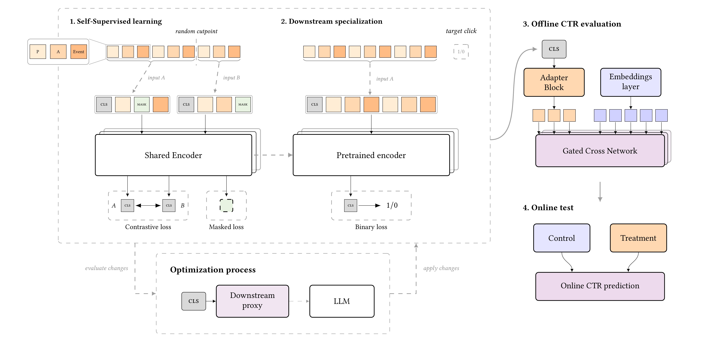
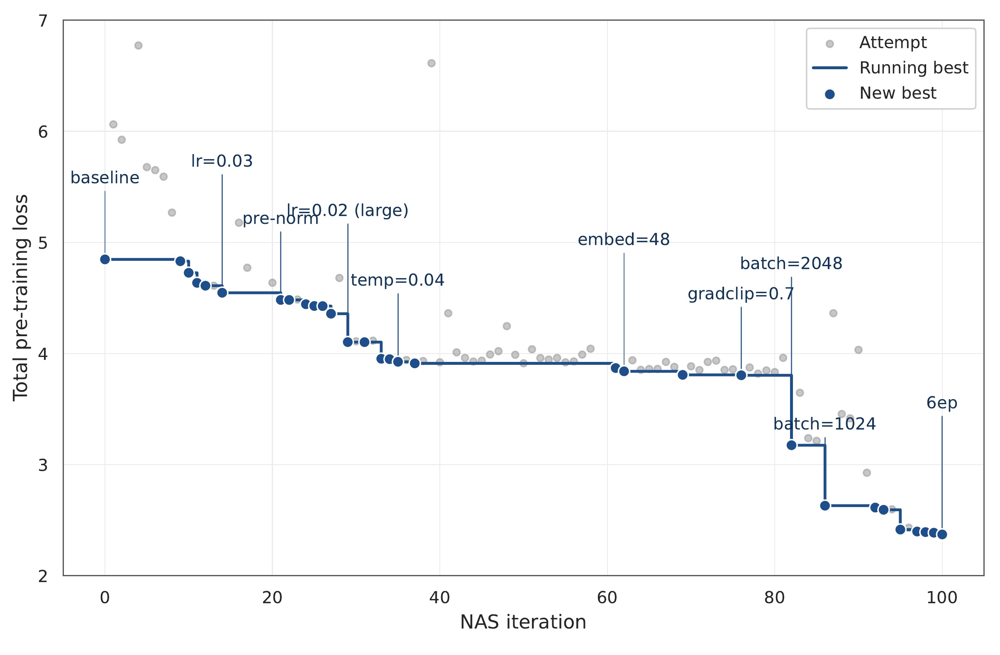
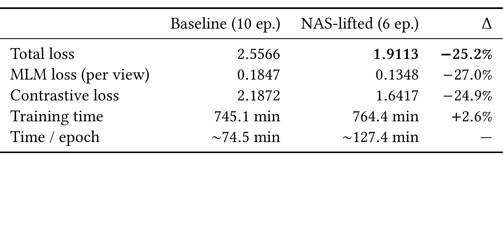
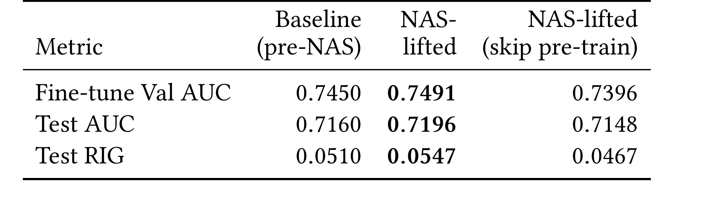
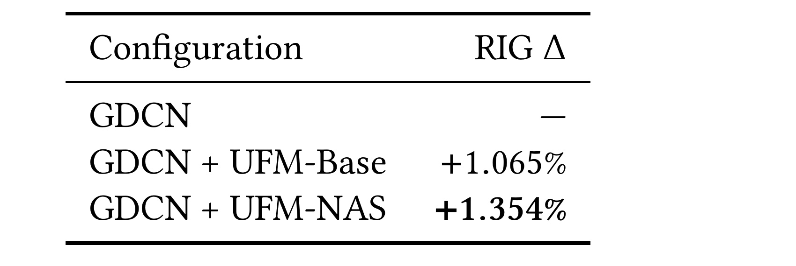
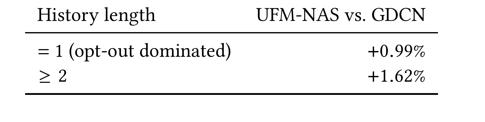
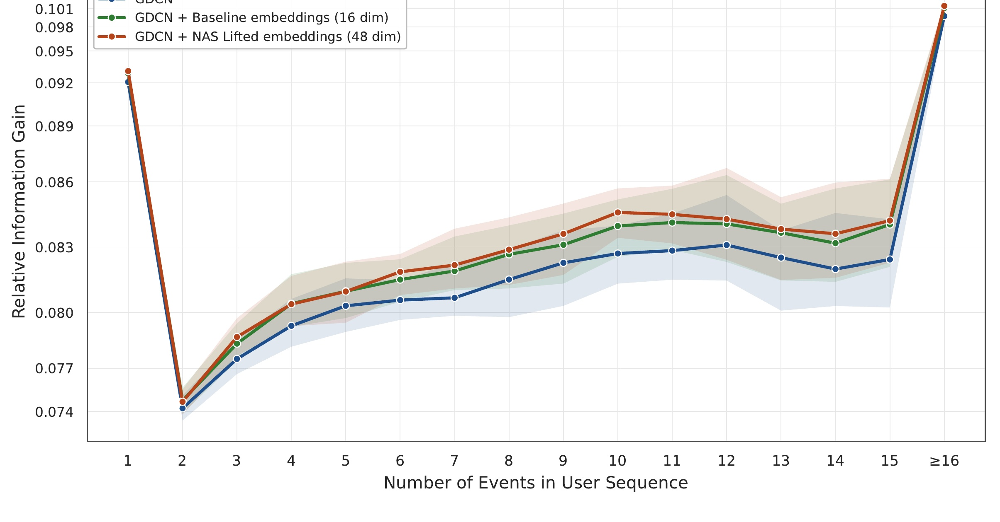
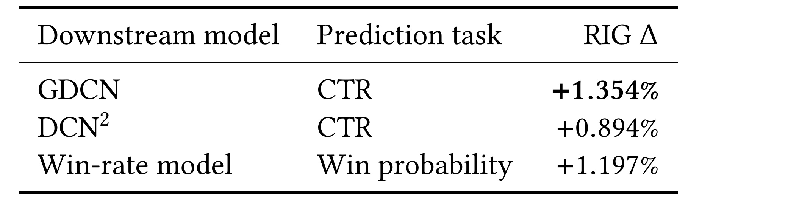
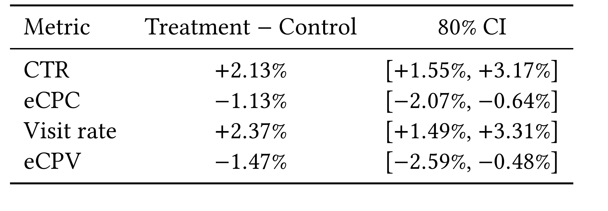

面向开放网络的用户基础模型：碎片历史、联合自监督与生产 RTB 部署
《Building a User Foundation Model for the Open Web》由 Solal Vernier、Ivan Can Arisoy、Merwan Barlier 与 Blaž Škrlj 完成，四位作者均来自 Teads。论文于 2026 年 7 月 30 日公开 arXiv v1，并标注为 RecSys 2026 论文，ACM DOI 为 10.1145/3773078.3831931；唯一论文入口是 arXiv:2607.28019。这是一篇工业系统论文：数据、流量规模和训练语料没有公开，arXiv 页面也未核验到独立代码仓库、模型权重或可复现实验数据，因此下文把“公开可复核的表格结果”和“Teads 内部生产证据”严格分开。
电商和内容平台上的用户基础模型通常假定账号稳定、历史连续且可追溯；开放网络 RTB 却面对跨会话不持久的身份、由隐私选择决定的历史可用性、大量完全没有历史的请求，以及仅由短而割裂的会话构成的可用记录。模型不仅要在这两种历史状态下都产生可用表示，还必须与现有 ranker 共享亚毫秒投标路径的极窄延迟预算。
1. 背景和问题
用户基础模型的典型路线是“预训练一次，再为多个下游任务专门化”。ShopperBERT、PinnerFormer、PinFM 等工作证明，Transformer 从用户动作序列学习到的表示，往往能补足只依赖监督标签训练的排序器。但是这些系统大多运行在封闭平台：登录账号把跨设备或跨会话事件串成较长轨迹，系统可以稳定地保存、更新并取回历史。开放网络广告没有这个前提。同一个自然人会在浏览器、设备和会话之间留下彼此断开的记录；只有同意相关隐私选项的用户才有可用浏览历史，其他请求从系统视角看就是“没有过去”。即便历史存在，也通常被 7 天窗口和最多 16 个事件截断。
传统 RTB 特征工程因此倾向于把历史压成计数器和时间桶，例如最近一次访问距今多久、某类广告或发布者出现多少次。这样做容易满足实时约束，却丢掉了事件次序、跨事件共现和行为轨迹。论文希望增加一条与 ranker 架构相对解耦的改进轴：先从 publisher、advertiser、interaction type 的有序序列中学习一个用户表示，再将它作为新特征接入现有 GDCN 或其他下游模型。这里的“foundation”并不等于巨型生成模型；它指同一编码器表示可迁移到多个广告预测目标，并通过自监督训练利用未标注浏览序列。
任务有两个硬边界。第一是延迟 C1：表示必须在投标路径中亚毫秒完成 DMP 到 DSP 的往返，而现有生产 ranker 已经占据大部分预算。第二是稀疏历史 C2：推理流量包含无历史和有历史两种结构，模型不能把长序列当成默认输入。论文把无历史请求表示为仅含当前 bid-request 三元组的长度 1 序列，并在预训练的随机切分中主动暴露这种退化情形。这不是通常意义上的“新用户随机初始化”，而是仍利用当前请求的 publisher、advertiser 和 interaction type 形成最小表示。
评估也必须按证据层级拆开。预训练损失和代理 AUC/RIG 回答搜索是否找到更好的 encoder；生产对齐的离线 GDCN、DCN2 和 win-rate 结果回答表示是否能接入不同模型与目标；7 日线上实验才回答真实流量 KPI 是否移动。RIG 是相对于常数基准的对数损失改善，不等于 AUC，也不能把“RIG lift +1.354%”误解为 CTR 直接上涨 1.354%。线上 Table 6 使用的是 Teads 内部报告标准的 80% 置信区间，而非常见的 95% 区间。论文报告区间不含零，只能按原口径陈述，不能升级成 95% 显著或长期因果保证。
论文还提出 LLM-as-optimizer，用 Claude Opus 4.7 在约 150 个可审查、带文献锚点的代码级改动（lifter）上提出搜索动作。这个部分容易被标题吸走注意力，但它不是让 LLM 直接预测 CTR，也不是把 LLM 放到线上服务路径；LLM 只参与离线训练 pipeline 的候选生成。更重要的是，作者没有在相同预算下把 LLM proposer 与随机搜索、贝叶斯优化或其他策略做受控对照。因此本文最扎实的贡献是开放网络序列表示的设计、接入和线上验证；“LLM 是更优搜索器”只是尚未被实验支持的解释。
从业务因果链看，论文真正要证明的是三件连续但不同的事：短而断裂的事件仍含有计数桶无法表达的顺序信号；自监督 encoder 能把这种信号压成 ranker 可消费的特征；该特征在不突破投标延迟和隐私边界的前提下改善真实 KPI。任一环缺失都会削弱结论：只有预训练 loss 不能说明广告效果，只有离线 RIG 不能说明服务可行，只有整体线上均值也不能说明无历史用户没有退化。后文因此按方法、离线分组、跨任务与线上区间逐层核验。
2. 方法
2.1 从碎片历史到可复用表示：端到端流水线
对用户 $u$，原始动作序列记为 $S_u=[e_1,e_2,\ldots,e_{N_u}]$，每个事件是三元组 $e_i=(\mathrm{pub}_i,\mathrm{adv}_i,\mathrm{evt}_i)$，分别表示发布者、广告主与交互类型（impression、click 或 conversion）。事件按时间排序。预训练时在随机切点 $\kappa_u\in\{1,\ldots,N_u-1\}$ 将历史切成互不重叠的过去视图 $A_u=[e_1,\ldots,e_{\kappa_u}]$ 与未来视图 $B_u=[e_{\kappa_u+1},\ldots,e_{N_u}]$。共享编码器分别产生 $c_A$ 和 $c_B$，既在每个视图内恢复 masked token，又把同一用户的两个时段表示拉近。

Figure 1 将系统分成四段。左侧的自监督阶段把 P、A、Event 三类 token 送入共享编码器，随机切点确保 $A$ 与 $B$ 来自同一用户但时间不重叠；MLM 监督位置级重构，对比损失监督两个 [CLS] 汇总。中间的监督阶段丢弃 $B$，只用当前 impression 之前的 $A_u^{(t)}$ 预测点击，避免让未来事件泄漏到标签。第三段把编码器的 [CLS] 表示经过 adapter 后，与既有离散 embedding 一起进入 Gated Cross Network；第四段在真实流量上比较不含 UFM 的 Control 与含 UFM-NAS 的 Treatment。虚线搜索回路连接 downstream proxy 和 LLM，说明 LLM 修改的是离线训练配置，不参与每次广告请求的前向。图中这四段也对应四类证据：自监督 loss、点击代理指标、生产对齐离线 RIG、线上 KPI，不能互相替代。
核心机制不是“把更长历史塞进 Transformer”，而是让同一 encoder 在预训练时同时学位置恢复与跨片段一致性，在部署时又能自然退化为仅含当前请求的单事件序列；这条统一路径避免为 opt-out 流量另训一套冷启动模型，也保证 adapter 接入不同 ranker 时消费的是同一种 [CLS] 表示。训练分支的双视图、微调分支的单视图和服务分支的最小三元组，因而共享参数却遵守各自的信息可用边界。
三元事件展开为连续三个 token，序列前加 [CLS]，另有 [PAD] 和 [OOV]。最大长度 $L=49$，恰好是 16 个事件乘 3，再加一个 [CLS]。这使 publisher、advertiser 和 event-type 拥有统一注意力空间，但也意味着模型只看有限窗口，不会恢复跨浏览器或跨设备身份。随机切分的副作用反而有利：只要 $N_u\ge2$，就可能取 $\kappa_u=1$，让过去视图只含一个事件三元组。作者借此在预训练中覆盖 history-absent 的近似形态，而不是等部署时才面对分布外冷态。
2.2 编码器与联合自监督目标
每个 token 的输入由词表 embedding、位置 embedding 和父事件的时间 embedding 相加。时间不是离散 bucket，而是相对本视图最新事件的延迟 $\Delta t_i$；同一事件的三个 token 共享时间向量。这样 publisher、advertiser 与 event-type 在同一次交互上拥有相同时间锚点，注意力仍能通过 token 类型区分三个槽位。每个维度的 LinearTimeEmbedding 为：
符号解释：$i$ 是事件位置，$d$ 是 embedding 维度，$\Delta t_i$ 是事件相对本视图最新事件的秒级延迟，$\alpha_d$ 与 $\beta_d$ 是逐维可学习的缩放和偏置。除以 60 转成分钟；对数压缩防止长尾时间差支配尺度，而仿射参数让不同维度学习不同的时间敏感度。最新事件和 [CLS] 的 $\Delta t=0$。这种编码只描述“距本视图最近事件多远”，不尝试恢复跨会话身份，也没有引入价格、创意或 session-level 上下文。
编码器是双向 Transformer，采用 pre-LayerNorm、GELU 和无 dropout 的配置。MLM 在 publisher、advertiser、event-type 三类位置上均匀采样 30% token 替换成 [MASK]，分别计算 $A$ 与 $B$ 的交叉熵。30% 高于 BERT 常见的 15%，是作者在本任务上的经验选择。MLM 迫使位置级 hidden state 利用邻近上下文恢复被遮蔽的类别，但单靠 MLM 并不保证 [CLS] 可以作为跨时间段稳定的用户摘要，因此还增加序列级 NT-Xent。
对 mini-batch 中第 $i$ 个用户，$(c_A^i,c_B^i)$ 是正对，其他用户在两种视图中的 $2(N-1)$ 个表示作为负样本。它要求同一用户的两个时间片在归一化表示空间靠近，同时把其他用户的过去与未来片段都当作竞争项；因此监督落在序列级 [CLS]，不会直接取代 token 级 MLM。论文给出的一个方向损失为：
符号解释：$c_A^i$ 和 $c_B^i$ 是第 $i$ 个用户两段时间视图的 [CLS] 表示，$j\ne i$ 枚举其他用户负样本，$\mathrm{sim}(a,b)=a^\top b/(\lVert a\rVert\lVert b\rVert)$ 是余弦相似度，温度 $\tau=0.04$。batch 包含 $N=1024$ 条历史。再交换 $A$、$B$ 得到反向项，整体为：
符号解释：$\ell_i^{A\to B}$ 和 $\ell_i^{B\to A}$ 分别以过去片段和未来片段为锚点，$2N$ 对 batch 内两个方向做平均，避免训练只偏向某个时间方向。对称化还意味着 $A$、$B$ 都必须既当 query 又当 positive target，而不是默认“过去预测未来”的单向因果任务。最终预训练目标没有额外权重系数：
符号解释：$\mathcal{L}_{\text{MLM}}^A$ 与 $\mathcal{L}_{\text{MLM}}^B$ 分别恢复两个视图中的 masked token，$\mathcal{L}_{\text{NT-Xent}}$ 约束序列汇总表示；三项未加显式权重。两项 MLM 保留局部 token 结构，对比项约束 [CLS] 在同一用户的前后片段之间保持一致。值得注意的是，时间切分不是随机 mask/reorder 或 dropout 产生的“合成增强”，而是真实时间上的不重叠片段。这种正对更贴近碎片浏览历史，但也可能把兴趣变化较大的前后片段硬拉近；论文没有按时间跨度或行为漂移强度给出专门消融。
2.3 点击微调、适配器与 RTB 服务拓扑
微调时，实例由 impression 时间 $t$ 之前的历史 $A_u^{(t)}$ 和二元点击标签 $y\in\{0,1\}$ 构成。这里严格只取 $t$ 前事件，既保持线上可得性，也避免当前点击之后的 conversion 等行为泄漏。预训练权重全部初始化到 encoder，输入不再随机切成两段，只保留与服务一致的单视图；随后在 [CLS] 上添加一个 dense+sigmoid 头：
符号解释：$A_u^{(t)}$ 是用户 $u$ 在 impression 时间 $t$ 之前的历史快照，下标 0 取 [CLS] 位置，$w_{\text{ctr}}$ 与 $b_{\text{ctr}}$ 是点击头参数，$\sigma$ 输出点击概率。encoder 和点击头按二元交叉熵端到端微调。完成后丢弃点击头，只部署 encoder $\theta$，将 $c=E_\theta(A_u^{(t)})_0$ 作为可复用序列特征。下游不是直接把 $c$ 当最终分数，而是先经过至少两层非线性 feed-forward adapter，再与 GDCN embedding layer 后的 flatten 表示拼接；作者观察到单线性投影对生产 CTR ranker 没有有意义的离线提升。这说明 adapter 负责把自监督表示映射到既有稀疏特征空间，而非可有可无的形状变换。
线上将 user-modeling 与 request-level ranker 解耦。用户交互近实时写入低延迟键值库，最多保留 16 个事件、TTL 7 天；每个 bid request 到来时，DMP 拉取最近历史、构造 token 序列，并以宽度 8、最大等待 1 ms 的 micro-batch 运行推理优化后的 encoder。生成的 [CLS] 发送给 DSP，后者用 adapter 和未改结构的 GDCN 计算 CTR。作者称 DMP 到 DSP 的完整往返满足亚毫秒预算。对 opt-out 用户，没有可跨请求取回的历史，DMP 只构造当前 request 三元组；因此 +0.99% 的无历史收益更可能来自当前上下文的非线性表示，而不是凭空恢复用户长期偏好。
2.4 LLM-as-optimizer：可审查 lifter 的两阶段搜索
搜索的原子不是一句自由文本或一整份生成代码，而是带文献锚点、可审查的 code-level lifter。约 150 个轴被分为 Interaction、Processing、Temporal、Embedding、Objective、Optimization、Regularization、Inference、Data Augmentation、RecSys Logic 十个 genome 类别，覆盖学习率、mask 比例、温度、归一化位置、激活、attention head 和深度等。LLM 每轮看到 lifter 目录、累计 trial 结果和当前配置摘要，提出一个或少量 lifter；harness 可以训练、因参数/预算约束静态拒绝，或返回修改。候选在 JAX/Flax/Optax 中快速迭代，最终配置再移植到 TensorFlow 服务。

Figure 2 展示 100 次预训练搜索。灰点是每个 attempt，深蓝阶梯是 running best，圆点表示新最优。从 baseline 约 4.85 到最终约 2.37，一共提交 31 个改善候选。前 14 次主要扫学习率；21 至 76 次是架构阶段，依次出现 pre-norm、8 heads、$\tau=0.04$、embedding 维度 48 和 gradient clipping；82 次以后转向数据与训练预算，最终选 batch 1024、6 epochs。轨迹的价值在于显示改善并非一次 LLM“顿悟”，而是多阶段累积；它也暴露选择偏差：最终架构是从 100 个带噪候选的极值中挑出，可能有 winner's curse。深蓝曲线只能证明该闭环找到更低代理损失，不能证明 LLM proposer 比相同 lifter 目录上的随机或经典搜索更高效。
搜索分两阶段。第一阶段最小化预训练 corpus 上的 MLM+NT-Xent，第二阶段固定已提交的预训练配置，再优化监督微调超参。后者同时查看 fine-tune validation AUC 以及 proxy classifier 在 test set 上的 AUC/RIG，因此所谓 test set 参与了该阶段的选择；它不再是完全未触碰的最终泛化集。生产对齐的另一个离线 setup 被作者当作 confirmatory test，线上 A/B 则提供更强外部证据。阅读表格时应把“search 内代理”“独立生产对齐离线”“线上”三层隔开。
3. 实验结果
3.1 搜索是否真的改善了预训练与微调
相对信息增益先由二元对数损失定义。对标签与预测 $\{(y_i,\hat p_i)\}_{i=1}^N$：
令 $\bar y$ 为样本点击率，常数基准对所有样本都预测 $\bar y$，则：
两个模型之间的“RIG lift”又是 RIG 的相对改善，即 RIG 差值除以 baseline RIG。这个二次相对量很容易与绝对 RIG 或线上 CTR 混淆。

Table 1 是提交配置的完整重训，而不是 Figure 2 中用于挑候选的某个瞬时最小值。NAS-lifted 在 6 epochs 后总损失为 1.9113，baseline 在 10 epochs 后为 2.5566，相对下降 25.2%；每个视图的 MLM 从 0.1847 降到 0.1348，对比损失从 2.1872 降到 1.6417。质量改善覆盖两项预训练目标，不只是其中一个被权重牺牲。训练效率却要双口径看：NAS 模型每 epoch 约 127.4 分钟，明显慢于 baseline 的 74.5 分钟，说明 48 维等改动提高单轮成本；因为只训练 6 轮，总耗时 764.4 分钟，相比 745.1 分钟仅增加 2.6%。所以正确结论是“以接近的总时间换得更低损失”，而不是“NAS 让训练更快”。

Table 2 把表示送进点击代理。NAS-lifted 的 fine-tune validation AUC 为 0.7491、test AUC 为 0.7196、test RIG 为 0.0547，三项都高于 pre-NAS 的 0.7450、0.7160、0.0510；以 test RIG 计算，作者报告相对提升 7.3%。更关键的是保持 NAS 架构但跳过预训练：test RIG 降至 0.0467，比 NAS-lifted 相对回退 14.6%，也低于 baseline。这项消融支持 MLM+NT-Xent 预训练确实提供信号，而不是更大维度或微调 recipe 单独造成全部收益。但每个 cell 只有一个 seed，表中没有方差；且第二阶段查看了 test proxy，数值应视作搜索结果点估计，不宜据 0.0036 的 AUC 差判断稳定性。
3.2 离线下游收益：基础表示、NAS 与历史长度

Table 3 使用不带用户序列 embedding 的生产 GDCN 为 reference。接入基础 encoder 后，GDCN+UFM-Base 的相对 RIG lift 为 +1.065%；将 encoder 换成 NAS-lifted 版本、保持同一 adapter 接入协议后为 +1.354%。两者都为正，说明“加入序列表示”本身已经是主要增量；NAS 又把 +1.065% 推到 +1.354%，提供额外 headroom。这里的百分比是相对 GDCN 的 RIG 改善，不是 RIG 绝对增加 1.354 个百分点，也不是 CTR 上涨 1.354%。论文未公开样本量、绝对 RIG、时间窗口或离线置信区间，因此不能把这个单点结果外推为不同广告市场的通用幅度。

Table 4 直接回应隐私和冷态边界。序列长度等于 1 的 bucket 只有当前事件三元组，作者称其由 opt-out 流量主导；UFM-NAS 相对 GDCN 仍有 +0.99% RIG。序列长度至少为 2 时，表示可以读取真实浏览历史，聚合增益达到 +1.62%。两组都为正说明部署没有把无历史请求变成明显劣势，但“opt-out dominated”不等于该 bucket 纯由 opt-out 组成，长度 1 还可能包含刚出现的新标识；同理，+0.99% 不能解释为模型恢复了被隐私机制隐藏的历史。它只表明当前三元上下文经过同一 encoder+adapter 后，在内部离线数据上补充了 GDCN 特征。
还需注意分组阈值是“事件数”，不是用户生命周期。一个有标识但刚进入 7-day TTL 的用户也可能落在长度 1，而高频用户达到 16 后会被截断；因此 +1.62% 混合了从 2 到 16 的多种历史丰富度。表格证明两大服务路径都能工作，却没有给出 opt-in 占比、各桶样本量或两组绝对 RIG，无法据此比较哪一组对整体线上收益贡献更大。

Figure 3 展开 Table 4 的两桶汇总。长度 1 的 RIG 较高，长度 2 陡降，随后 3 至 10 大体上升；10 至 15 之间并非严格单调，到了 16+ 又出现尖峰。NAS 48 维表示多数长度高于 Base 16 维和纯 GDCN，约从 6 个事件以后差距更明显。阴影显示存在不确定性，但原文没有在图注中把该阴影声明成 Table 6 的 80% 线上 CI，因此两者不能混为同一统计口径。长度 1 和 16+ 的高点也可能受到 bucket 样本构成、事件类型或用户活跃度差异影响；没有每桶样本量和归一化分布时，曲线主要证明“收益跨长度存在”，不证明历史越长收益必然越大。
图中的三条线还揭示 Base 与 NAS 的区别主要出现在历史可用后：长度 1 时三者接近，6 个事件以后橙线通常更稳定地位于绿线上方。这个形态与 NAS 把 embedding 从 16 维扩到 48 维、调整温度和训练 recipe 相容，但不是组件级归因，因为作者没有对这些 commit 逐一回滚。最右端“>=16”也把所有达到上限的请求合在一起，不能视为精确的第 16 个事件边际收益。
3.3 跨架构与跨任务迁移

Table 5 复用同一个 UFM-NAS 表示和 adapter 协议。生产 GDCN 的 CTR RIG lift 为 +1.354%，另一种 CTR 架构 DCN2 为 +0.894%，说明增益没有依赖单一 gated cross network。更有意思的是 bid win-rate 模型：预测目标从用户是否点击改为竞价是否获胜，仍得到 +1.197% RIG。这给“foundation”提供了跨任务证据，因为 encoder 只在点击任务上微调，作者没有为 win-rate 再训练专门 UFM。边界同样明确：迁移只覆盖两个 ranker 架构和两个生产目标，且都是同一广告业务内部；没有转化、长期价值或跨公司数据。对 win-rate 的正收益说明表示携带超出点击标签的历史信号，但还不能证明对任意下游均有效。
3.4 线上 A/B：80% 置信区间不是 95%

Table 6 来自 7 日全量生产流量上的 50/50 实验，campaign budget 在两组间等额分配。有持久 visitor identifier 的用户按 hash 在请求间保持稳定分组；opt-out 流量没有跨请求身份，只能按 bid request 随机。这种混合随机化与业务隐私结构一致，但两类流量的实验单位不同，解释切片效果时不能假定所有请求都具有用户级粘性。Treatment 在 click-optimized 流量上 CTR +2.13%，80% CI 为 [+1.55%, +3.17%]；eCPC -1.13%，区间 [-2.07%, -0.64%]。在 visit-optimized 流量上，Visit rate +2.37%，区间 [+1.49%, +3.31%]；eCPV -1.47%，区间 [-2.59%, -0.48%]。四项按作者内部 80% 标准均不含零。
线上结果是全文最有说服力的证据，因为 CTR、成本与访问指标方向一致，且直接比较 production ranker 加不加 UFM-NAS。它仍不是无条件结论：80% 区间比 95% 区间窄，论文没有给出 95% 上下界、绝对基线、流量规模、多重比较校正或更长时间稳定性；实验仅运行 7 天，也没有季节性与广告主结构的外推检查。更准确的表述是“在该 7 日实验和 80% CI 报告口径下，四项相对变化区间均不含零”，而不是“已在 95% 水平证明长期收益”。同时，eCPC/eCPV 下降代表单位结果成本下降，不等于总预算或平台收入必然下降。
3.5 证据链的缺口
作者主动列出三个离线限制。其一，Tables 1 和 2 每个 cell 是单 seed 点估计，多 seed 重训可能改变排序或缩小效应。其二，没有同预算 search-procedure control；更好的最终配置可能主要来自精心整理的 lifter 目录，而非 LLM proposer。其三，Phase 1 从 100 个 noisy candidate 中选极值，会有 winner's curse；Phase 2 又查看 test proxy，使该 test 对搜索并非完全独立。生产对齐离线集与线上 A/B 在一定程度上缓解这些问题，但不能回答 LLM 是否优于随机搜索。
数据可复现性也有限。论文没有公开用户数、序列分布、事件词表规模、点击率基线、训练集日期或硬件配置；Figure 3 没有每桶样本量；线上只给相对指标。隐私 opt-in 是研究问题本身，却也使外部研究者无法核验 history-absent 与 history-present 的混合比例。另一方面，系统参数相当具体：16 events、7-day TTL、49 token、micro-batch width 8、maximum wait 1 ms，以及 adapter 至少两层非线性。这些细节足以让工程团队复现“结构”，不足以复现相同数值。
4. 总结
这篇论文的第一项贡献，是把用户基础模型从稳定账号平台搬到开放网络 RTB，并把身份碎片、隐私 opt-in、短历史与亚毫秒预算当成建模约束，而不是部署后的例外。三元事件序列、随机时间切分双视图、30% MLM、双向 NT-Xent 和点击微调构成一条并不花哨但因果链完整的表示学习路线。无历史请求退化为当前三元组，避免了依赖不可用身份；DMP 编码与 DSP ranker 解耦，使表示可以在严格时延内接入生产。
第二项贡献是证据覆盖从训练到线上：预训练损失下降、skip-pretrain 消融、GDCN/DCN2 跨架构、click/win-rate 跨任务，以及 7 日 50/50 A/B。最稳妥的结论不是某个单点百分比，而是“同一点击微调表示在无历史和有历史两种流量上均有正向离线 RIG，并在内部 80% CI 口径的线上 KPI 中得到一致方向确认”。这里仍要保留四个限制：内部数据不可复核、离线单 seed、测试代理参与搜索、线上 CI 不是 95%。
LLM-as-optimizer 的工程形态值得关注：把候选限制在有文献依据、可回放的 lifter 目录，比直接接受生成代码更适合生产审核。Figure 2 证明这套闭环找到了可部署的较优配置，却没有证明 LLM 比其他 proposal strategy 更强。若继续研究，优先级应是同预算随机/经典搜索对照、多 seed 重训、按 history availability 和序列长度报告样本量与方差，以及把价格、创意上下文和 session 特征纳入序列的系统消融。只有补齐这些证据，才能判断收益主要来自自监督目标、搜索空间设计、LLM 提案，还是流量分布与容量扩大。
对推荐系统实践者，最可迁移的启示是“先按真实可用的身份边界定义序列，再谈更大的模型”。若历史由隐私选择决定，训练、服务和实验都必须保留 history-absent 路径；若线上预算极窄，foundation encoder 应被当作可复用的用户服务，而不是塞进每个 request ranker 重算；若引入 LLM 做优化，候选动作、预算、对照和提交轨迹必须可审计。这些原则比照搬 Teads 的具体百分比更可靠，也更适用于不同广告或推荐平台。